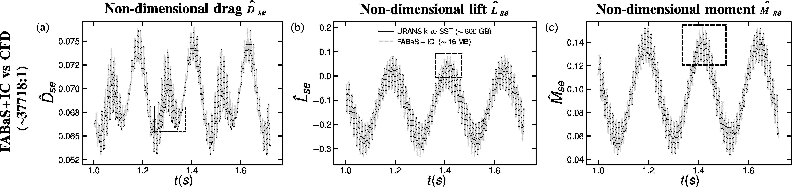
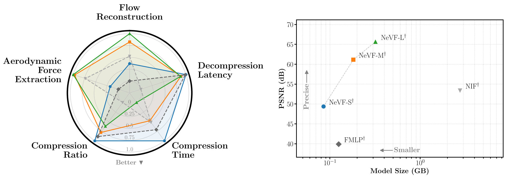

Flow field compression is a key milestone for the feasible implementation of deep learning (DL) models at scale and the efficient storage of the flow datasets required for their training. Sampling strategies represent a fundamental step in vision-based compression techniques, directly conditioning both model accuracy and compression ratios. Their main objective is to accurately capture all necessary flow features for reproducing the phenomena of interest, which typically involves extracting wind-induced forces while simultaneously resolving flow characteristics in the near and far wakes. However, accurately identifying flow information in those regions requires conflicting sampling criteria. To address this challenge, this study proposes an importance sampling strategy guided by flow activity to automatically identify and focus on high-activity regions within the flow domain, combining Signed Distance Functions (SDFs) and vorticity fields. The proposed Flow Activity-Based Importance Sampling (FABaS) method achieves near-lossless compression ratios of 37718:1 while guaranteeing accurate reproduction of flow features, with a Mean Absolute Percentage Error (MAPE) of 0.063%, for precise surface force extraction in the boundary layer region and far wake. Consequently, this technique is a powerful tool for deep learning compression and prediction of flow field data.



@Article{mures2026flow,
author = {Mures, Omar A. and Dopazo, Abrahan and Cid Montoya, Miguel},
title = {FABaS: Flow activity-biased importance sampling for deep learning image-based flow compression and prediction},
journal = {Journal of Wind Engineering and Industrial Aerodynamics},
volume = {277},
pages = {106544},
year = {2026},
doi = {10.1016/j.jweia.2026.106544},
url = {https://doi.org/10.1016/j.jweia.2026.106544}
}